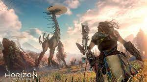

Los videojuegos de aventura son un género de videojuegos, caracterizados por la investigación, exploración, la solución de rompecabezas, la interacción con personajes del videojuego, y un enfoque en el relato en vez de desafíos basados en reflejos. Es importante observar que este término no tiene relación con las películas y novelas de aventura y no es indicativo del tema o del sujeto que trata. La vasta mayoría de videojuegos de aventura son videojuegos de computadora, aunque los videojuegos de aventura de videoconsola no son desconocidos por lo mucho.

A diferencia de muchos otros géneros de videojuegos, el enfoque en una historia de los géneros de aventura permite tomar prestados elementos de otros medios eminentemente narrativos, como la literatura y las películas. Los videojuegos de aventura abarcan una amplia variedad de géneros literarios, incluyendo fantasía, ciencia ficción, misterio, terror, detectivesca y comedia.